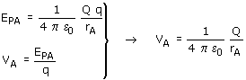

| Potencial (En campo de carga puntual) Se define potencial en un punto A de un campo eléctrico, al trabajo que realiza el campo por cada unidad de carga positiva (+1 C) que se desplaza desde el punto A hasta un punto O elegido arbitrariamente (Origen de potencial) El potencial en un punto A se obtiene dividiendo la energía potencial de una carga q, colocada en dicho punto, entre la propia carga  En la expresión del potencial la carga Q se pone con signo Nota Si el campo lo crean varias cargas Q1, Q2, Q3 el potencial en un punto será la suma algebraica de los potenciales creados en ese punto por cada una de las masas |